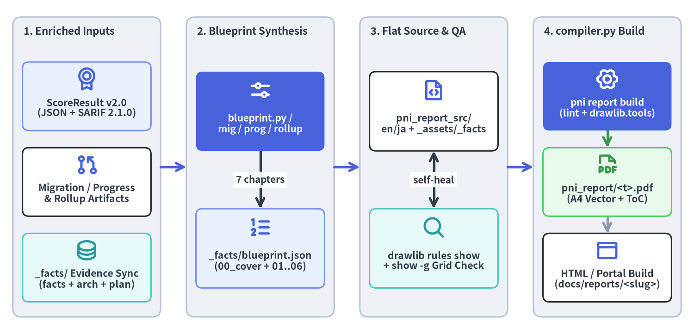
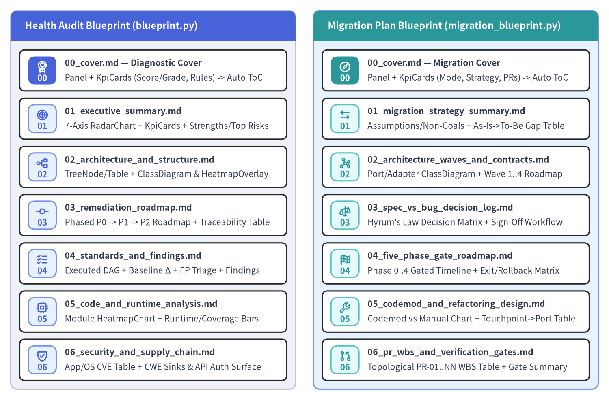

Drawlib Visual Reporter & 7-Chapter Blueprints
Rather than asking an LLM to sort tables or invent document layouts from scratch, pni501 (v0.2.0) deterministically enriches, deduplicates, and pre-sorts every diagnostic metric into a cached ReportBlueprint (blueprint.py, migration_blueprint.py, progress_blueprint.py, and rollup_blueprint.py), synchronizes structured evidence JSONs directly into <src_dir>/_facts/, and compiles a flat, self-contained Drawlib report project (pni_report_src -> pni_report) into vector A4 PDFs, bilingual HTML portals, Markdown, and PNG deliverables via compiler.py.

Source Code
from drawlib.canvas import save, setup
from drawlib.diagrams.architecture import ArchitectureDiagram, Node, NodeGroup, PhosphorIcon
from drawlib.styles import Styles
setup(width=162, height=78, dpi=150)
diag = ArchitectureDiagram(
node_style=Styles.PrimaryBold,
node_text_style=Styles.DarkBold.patch(text_size=10.2),
edge_style=Styles.DarkBold,
edge_text_style=Styles.DarkBold.patch(text_size=10.0),
node_card_style=Styles.WhiteBordered.patch(shape_r=1.5),
)
g_inputs = diag.add(
NodeGroup(
title="1. Enriched Inputs",
width=34.5,
height=70.0,
style=Styles.Neutral.patch(shape_r=2.0),
text_style=Styles.DarkBold.patch(text_size=10.8, halign="left", valign="top"),
),
xy=(3.0, 4.0),
)
n_score = g_inputs.add(
Node(
"ScoreResult v2.0\n(JSON + SARIF 2.1.0)",
width=30.0,
height=16.0,
icon=PhosphorIcon.MEDAL,
icon_size=5.4,
card_style=Styles.PrimaryNeutral.patch(shape_r=1.5),
),
xy=(17.25, 51.5),
)
n_plan = g_inputs.add(
Node(
"Migration / Progress\n& Rollup Artifacts",
width=30.0,
height=16.0,
icon=PhosphorIcon.GIT_PULL_REQUEST,
icon_size=5.4,
),
xy=(17.25, 31.5),
)
n_cache = g_inputs.add(
Node(
"_facts/ Evidence Sync\n(facts + arch + plan)",
width=30.0,
height=16.0,
icon=PhosphorIcon.DATABASE,
icon_size=5.4,
style=Styles.SecondaryBold,
card_style=Styles.SecondaryNeutral.patch(shape_r=1.5),
),
xy=(17.25, 11.5),
)
g_bp = diag.add(
NodeGroup(
title="2. Blueprint Synthesis",
width=34.5,
height=70.0,
style=Styles.Neutral.patch(shape_r=2.0),
text_style=Styles.DarkBold.patch(text_size=10.8, halign="left", valign="top"),
),
xy=(43.5, 4.0),
)
n_bp_eng = g_bp.add(
Node(
"blueprint.py /\nmig / prog / rollup",
width=30.0,
height=18.5,
icon=PhosphorIcon.SLIDERS_HORIZONTAL,
icon_size=5.6,
style=Styles.WhiteBold,
text_style=Styles.WhiteBold.patch(text_size=10.0),
card_style=Styles.PrimaryFlat.patch(shape_r=1.5),
),
xy=(17.25, 48.0),
)
n_bp_json = g_bp.add(
Node(
"_facts/blueprint.json\n(00_cover + 01..06)",
width=30.0,
height=18.5,
icon=PhosphorIcon.LIST_NUMBERS,
icon_size=5.6,
card_style=Styles.PrimaryNeutral.patch(shape_r=1.5),
),
xy=(17.25, 16.0),
)
g_author = diag.add(
NodeGroup(
title="3. Flat Source & QA",
width=34.5,
height=70.0,
style=Styles.Neutral.patch(shape_r=2.0),
text_style=Styles.DarkBold.patch(text_size=10.8, halign="left", valign="top"),
),
xy=(84.0, 4.0),
)
n_src = g_author.add(
Node(
"pni_report_src/\nen/ja + _assets/_facts",
width=30.0,
height=18.5,
icon=PhosphorIcon.FILE_CODE,
icon_size=5.6,
),
xy=(17.25, 48.0),
)
n_qa = g_author.add(
Node(
"drawlib rules show\n+ show -g Grid Check",
width=30.0,
height=18.5,
icon=PhosphorIcon.MAGNIFYING_GLASS,
icon_size=5.6,
style=Styles.SecondaryBold,
card_style=Styles.SecondaryNeutral.patch(shape_r=1.5),
),
xy=(17.25, 16.0),
)
g_compile = diag.add(
NodeGroup(
title="4. compiler.py Build",
width=34.5,
height=70.0,
style=Styles.Neutral.patch(shape_r=2.0),
text_style=Styles.DarkBold.patch(text_size=10.8, halign="left", valign="top"),
),
xy=(124.5, 4.0),
)
n_comp = g_compile.add(
Node(
"pni report build\n(lint + drawlib.tools)",
width=30.0,
height=16.0,
icon=PhosphorIcon.GEAR_SIX,
icon_size=5.4,
style=Styles.WhiteBold,
text_style=Styles.WhiteBold.patch(text_size=10.0),
card_style=Styles.PrimaryFlat.patch(shape_r=1.5),
),
xy=(17.25, 51.5),
)
n_pdf = g_compile.add(
Node(
"pni_report/<t>.pdf\n(A4 Vector + ToC)",
width=30.0,
height=16.0,
icon=PhosphorIcon.FILE_PDF,
icon_size=5.4,
style=Styles.SuccessBold,
card_style=Styles.SuccessNeutral.patch(shape_r=1.5),
),
xy=(17.25, 31.5),
)
n_opt = g_compile.add(
Node(
"HTML / Portal Build\n(docs/reports/<slug>)",
width=30.0,
height=16.0,
icon=PhosphorIcon.BROWSER,
icon_size=5.4,
),
xy=(17.25, 11.5),
)
diag.connect(n_bp_eng, n_bp_json, label="7 chapters", routing="orthogonal")
diag.connect(n_qa, n_src, label="self-heal", arrow="<->", routing="orthogonal")
diag.connect(n_comp, n_pdf, routing="orthogonal", style=Styles.SuccessBold)
diag.connect(n_pdf, n_opt, routing="orthogonal", style=Styles.MutedBold)
diag.connect(g_inputs, g_bp, routing="orthogonal", style=Styles.PrimaryBold)
diag.connect(g_bp, g_author, routing="orthogonal", style=Styles.PrimaryBold)
diag.connect(g_author, g_compile, routing="orthogonal", style=Styles.PrimaryBold)
diag.draw(xy=(0.0, 0.0))
save()
1. Flat Self-Contained Layout & _facts/ Evidence Synchronization
In pni501 v0.2.0, Drawlib reports adopt a flat, self-contained directory layout defaulting to pni_report_src -> pni_report (DEFAULT_REPORT_SRC_DIR = "pni_report_src", DEFAULT_REPORT_OUTPUT_DIR = "pni_report"). There is no extra <target>_src/ sub-nesting: src_dir directly owns every configuration file, shared Drawlib style helper, localized chapter folder, brand asset, and synchronized evidence JSON:
pni_report_src/ # Exact src_dir (no nested <target>_src/ folder)
├── drawlib.toml # [i18n] (en / ja / en,ja), title, theme metadata
├── styles.py # Drawlib Colors & Styles preset tokens
├── utils.py # Shared helpers + injected draw_pni_logo()
├── _assets/ # Brand logos (logo.png, logo_dark.png, favicon.png, ogp.png)
├── _facts/ # Auto-synchronized structured evidence JSONs (Git-friendly)
│ ├── project_facts.json # Project manifests, lockfiles & dependency metadata
│ ├── ast_facts.json # Tree-sitter CST module inventory, sinks & endpoints
│ ├── runtime_facts.json # Container build, offline unit tests, coverage & smoke
│ ├── security_facts.json # Trivy FS/image CVEs, IaC misconfigs & redacted secrets
│ ├── pentest_facts.json # Live HTTP DAST probe results & confirmed findings
│ ├── architecture.json # 3-aspect ArchitectureRecord (profile, layers, flows)
│ ├── score.json # Canonical ScoreResult v2.0 (baseline, Δ, FP triage, DAG)
│ ├── plan.json # Pre-flight execution plan & validated Mermaid DAG
│ └── blueprint.json # Pre-sorted chapter blueprint payload (00..06)
├── en/ # English chapters (00_cover.md .. 06_*.md)
└── ja/ # Optional Japanese chapters (00_cover.md .. 06_*.md)
- Why Sync
_facts/? Whenpni report init, workflow report synthesis, orpni report buildruns (src/pni/_reporter/facts_sync.py), structured JSON evidence (project_facts.json,ast_facts.json,runtime_facts.json,security_facts.json,pentest_facts.json,architecture.json,score.json,plan.json, plus bundledfacts.jsonandblueprint.json) is synchronized automatically into<src_dir>/_facts/. Ephemeral SQLite state databases (workflow_state.db), Trivy caches, and raw container logs remain strictly inside.pni/cache/. Every Drawlib report source tree can therefore be committed to Git, reviewed, and rebuilt anywhere with zero external cache dependencies. - Pre-Computed Chapter Payloads: Rather than asking an LLM to sort tables or invent layouts,
blueprint.py,migration_blueprint.py,progress_blueprint.py, androllup_blueprint.pyemit pre-sorted tables, chart series, KPI card values, and Drawlib component recommendations straight into<src_dir>/_facts/.
2. Dual 7-Chapter ReportBlueprint Architecture
Both health audit workflows (category: audit) and modernization workflows (category: migration) standardize on an identical 7-file linear doc layout (00_cover.md + 01..06.md), localized in English (en), Japanese (ja), or bilingual (en,ja). Drawlib automatically injects a hyperlinked Table of Contents immediately after 00_cover.md. (Progress workflows use a streamlined 5-file layout 00_cover.md + 01..04.md via progress_blueprint.py, and polyglot Rollup workflows use a 6-file layout 00_cover.md + 01..05.md via rollup_blueprint.py.)

Source Code
from drawlib.canvas import save, setup
from drawlib.icons import phosphor
from drawlib.smartarts import CardList, Panel
from drawlib.styles import Styles
setup(width=170, height=112, dpi=150)
audit_panel = Panel(
"Health Audit Blueprint (blueprint.py)",
header_variant="filled",
header_height=8.5,
style=Styles.Neutral.patch(shape_r=2.0),
header_style=Styles.PrimaryFlat,
text_style=Styles.WhiteBold.patch(text_size=11.2),
)
audit_panel.draw(xy=(3.0, 3.0), width=79.5, height=106.0)
audit_cards = CardList(
style=Styles.WhiteBordered.patch(shape_r=1.4),
text_style=Styles.DarkBold.patch(text_size=10.2),
description_style=Styles.Dark.patch(text_size=10.0),
badge_shape="rounded_rect",
badge_style=Styles.PrimaryNeutral,
badge_text_style=Styles.PrimaryBold.patch(text_size=10.0),
icon_style=Styles.PrimaryBold,
direction="vertical",
spacing=2.0,
)
audit_cards.add(
"00_cover.md — Diagnostic Cover",
"Panel + KpiCards (Score/Grade, Rules) -> Auto ToC",
badge_text="00",
icon=phosphor.medal,
badge_style=Styles.PrimaryFlat,
badge_text_style=Styles.WhiteBold.patch(text_size=10.0),
icon_style=Styles.WhiteBold,
)
audit_cards.add(
"01_executive_summary.md",
"7-Axis RadarChart + KpiCards + Strengths/Top Risks",
badge_text="01",
icon=phosphor.chart_polar,
)
audit_cards.add(
"02_architecture_and_structure.md",
"TreeNode/Table + ClassDiagram & HeatmapOverlay",
badge_text="02",
icon=phosphor.tree_structure,
)
audit_cards.add(
"03_remediation_roadmap.md",
"Phased P0 -> P1 -> P2 Roadmap + Traceability Table",
badge_text="03",
icon=phosphor.git_commit,
)
audit_cards.add(
"04_standards_and_findings.md",
"Executed DAG + Baseline Δ + FP Triage + Findings",
badge_text="04",
icon=phosphor.list_checks,
)
audit_cards.add(
"05_code_and_runtime_analysis.md",
"Module HeatmapChart + Runtime/Coverage Bars",
badge_text="05",
icon=phosphor.cpu,
)
audit_cards.add(
"06_security_and_supply_chain.md",
"App/OS CVE Table + CWE Sinks & API Auth Surface",
badge_text="06",
icon=phosphor.shield_check,
)
audit_cards.draw(xy=(5.5, 5.5), width=74.5, height=92.5)
mig_panel = Panel(
"Migration Plan Blueprint (migration_blueprint.py)",
header_variant="filled",
header_height=8.5,
style=Styles.PrimaryNeutral.patch(shape_r=2.0),
header_style=Styles.SecondaryFlat,
text_style=Styles.WhiteBold.patch(text_size=11.2),
)
mig_panel.draw(xy=(87.5, 3.0), width=79.5, height=106.0)
mig_cards = CardList(
style=Styles.WhiteBordered.patch(shape_r=1.4),
text_style=Styles.DarkBold.patch(text_size=10.2),
description_style=Styles.Dark.patch(text_size=10.0),
badge_shape="rounded_rect",
badge_style=Styles.SecondaryNeutral,
badge_text_style=Styles.SecondaryBold.patch(text_size=10.0),
icon_style=Styles.SecondaryBold,
direction="vertical",
spacing=2.0,
)
mig_cards.add(
"00_cover.md — Migration Cover",
"Panel + KpiCards (Mode, Strategy, PRs) -> Auto ToC",
badge_text="00",
icon=phosphor.compass,
badge_style=Styles.SecondaryFlat,
badge_text_style=Styles.WhiteBold.patch(text_size=10.0),
icon_style=Styles.WhiteBold,
)
mig_cards.add(
"01_migration_strategy_summary.md",
"Assumptions/Non-Goals + As-Is->To-Be Gap Table",
badge_text="01",
icon=phosphor.arrows_left_right,
)
mig_cards.add(
"02_architecture_waves_and_contracts.md",
"Port/Adapter ClassDiagram + Wave 1..4 Roadmap",
badge_text="02",
icon=phosphor.graph,
)
mig_cards.add(
"03_spec_vs_bug_decision_log.md",
"Hyrum's Law Decision Matrix + Sign-Off Workflow",
badge_text="03",
icon=phosphor.scales,
)
mig_cards.add(
"04_five_phase_gate_roadmap.md",
"Phase 0..4 Gated Timeline + Exit/Rollback Matrix",
badge_text="04",
icon=phosphor.flag_checkered,
)
mig_cards.add(
"05_codemod_and_refactoring_design.md",
"Codemod vs Manual Chart + Touchpoint->Port Table",
badge_text="05",
icon=phosphor.wrench,
)
mig_cards.add(
"06_pr_wbs_and_verification_gates.md",
"Topological PR-01..NN WBS Table + Gate Summary",
badge_text="06",
icon=phosphor.git_pull_request,
)
mig_cards.draw(xy=(90.0, 5.5), width=74.5, height=92.5)
save()
2.1 Health Audit 7-Chapter Blueprint (blueprint.py)
src/pni/_reporter/blueprint.py maps ScoreResult v2.0, WorkflowFactsBundle, and ArchitectureRecord into seven structured chapters:
| Chapter File | Primary Blueprint Data Slice | Standard Drawlib Visual Components |
|---|---|---|
00_cover.md |
overall_score, grade, workflow_id, evaluated_at, rule compliance summary, finding counts |
Full-bleed cover Panel + draw_pni_logo() + KpiCards (followed by automatic PDF/HTML Table of Contents) |
01_executive_summary.md |
category_scores (7 axes), category_rationales, strengths, top critical/high risks, approved_plan_summary |
7-Axis RadarChart + KpiCards + CardList / summary tables |
02_architecture_and_structure.md |
architecture_record (layers_and_modules, flows_and_state), internal_import_graph, module_hotspots |
TreeNode / Table + UML ClassDiagram paired with HeatmapOverlay(show_contour_lines=False) |
03_remediation_roadmap.md |
action_plan (P0 -> P1 -> P2 remediation items, target files, effort, linked rule IDs) |
Phased Roadmap / ChevronProcess + remediation traceability Table |
04_standards_and_findings.md |
execution_dag (AUTO/AI/HYBRID/SKIP + audit_scope), 7-axis baseline_scores vs. AI Δ (±10 pt), audit_dimensions, rule_compliance, consolidated_findings, triaged_adjustments, opt_outs, compact artifact_manifest |
Executed Audit DAG (drawlib.graph / flow) + Baseline vs. Final Table + weakest-first BarChart + consolidated findings & FP triage Table |
05_code_and_runtime_analysis.md |
modules (loc, complexity, typing, docstrings, risk_score), runtime_facts (tests, coverage, smoke) |
Module quality HeatmapChart + multi-series runtime/coverage BarChart |
06_security_and_supply_chain.md |
security_facts (Trivy app/OS CVEs, secrets, IaC), dangerous_sinks, api_endpoints, pentest_facts |
App/OS CVE & CWE sink breakdown + live HTTP penetration test verdict Table |
2.2 Migration Execution Plan 7-Chapter Blueprint (migration_blueprint.py)
For modernization workflows (based_on a completed health audit run), src/pni/_reporter/migration_blueprint.py synthesizes MigrationPlanResult and MigrationFacts into a parallel 7-chapter execution blueprint:
| Chapter File | Primary Blueprint Data Slice | Standard Drawlib Visual Components |
|---|---|---|
00_cover.md |
transformation_mode, migration_strategy, api_compatibility, bug_handling_policy, PR & phase counts |
Full-bleed migration cover Panel + draw_pni_logo() + KpiCards (followed by automatic ToC) |
01_migration_strategy_summary.md |
confirmed_assumptions, non_goals, target_axes (As-Is -> To-Be stack & risk vectors) |
Strategy overview CardList + As-Is -> To-Be transformation matrix Table |
02_architecture_waves_and_contracts.md |
target_architecture (target_layers, component_mappings), refactoring_waves, cycle_cuts, implicit_contracts |
To-Be Port/Adapter ClassDiagram / ArchitectureDiagram + Wave 1..4 dependency topology |
03_spec_vs_bug_decision_log.md |
decision_log (DEC-01..NN), spec_vs_bug_candidates (Hyrum's Law quirks requiring PO sign-off) |
Decision workflow diagram + DEC-01..NN sign-off matrix Table |
04_five_phase_gate_roadmap.md |
phase_gates (Phase 0 Characterization through Phase 4 Cutover, exit criteria, rollback notes) |
5-phase gated Roadmap / GanttChart + exit & rollback criteria Table |
05_codemod_and_refactoring_design.md |
mechanical_codemods, manual_blockers, boundary_touchpoints (db, http, cache, auth ports) |
Automated codemod vs. manual refactoring BarChart + boundary touchpoint mapping Table |
06_pr_wbs_and_verification_gates.md |
pr_wbs (PR-01..NN topological pull-request tickets, depends_on_prs, verification_cmd) |
PR dependency DAG / phase breakdown + PR-01..NN work breakdown structure Table |
3. Non-Destructive Scaffolding, Built-in Preflight Linter & Unified Portal Deployment
src/pni/_reporter/compiler.py and src/pni/_reporter/drawlib_guide.py enforce deterministic quality gates via the two pni report subcommands (pni report init and pni report build).
3.1 Non-Destructive pni report init & pni report build
To prevent bloated system prompts during early CST and rule-interpretation steps, agents load Drawlib documentation dynamically right before authoring pni_report_src/<lang>/*.md, verify each diagram with the -g coordinate grid, and compile deliverables directly into pni_report/:
# 1. Non-destructively scaffold pni_report_src/ (preserves existing *.md chapters; syncs _assets/)
pni report init full_audit --src-dir pni_report_src --lang en --style google
# 2. Query Drawlib API & component rules on-demand (never guess constructor arguments)
uv run drawlib rules show overview
uv run drawlib rules show project-doc
uv run drawlib rules show api
# 3. Stage 2 visual grid verification (-g) before full compilation
uv run drawlib show pni_report_src/en/01_executive_summary.md \
-s pni_report_src/styles.py -u pni_report_src/utils.py \
-g -o .drawlib/scratch/exec_summary_grid.png
# 4. Run built-in lint_drawlib_chapters() preflight and compile pni_report/full_audit.pdf
pni report build full_audit --src-dir pni_report_src --output-dir pni_report
3.2 Built-in Preflight Visual Linter (lint_drawlib_chapters) & Link Verification
pni report build automatically runs lint_drawlib_chapters() and post-build verification inside compiler.py (no separate check command is needed):
- Non-Destructive Re-Scaffolding & Brand Assets (
scaffold_report_project): On initial creation,pni report initremoves starter sample files (00_cover.md,01_overview.md,02_design.md), appends print wide-table CSS (@media print), copies official brand assets (_assets/{logo.png,logo_dark.png,favicon.png,ogp.png}), and injectsdraw_pni_logo()intoutils.py. When re-run — even with--force— all authored<lang>/*.mdchapters are preserved intact. - Unmasked Token Guard:
lint_drawlib_chapters()scans chapter Markdown for raw GitHub/AWS/Slack/OpenAI token prefixes (ghp_,github_pat_,AKIA,xox*,sk-live-, etc.) so reports never trigger GitHub Push Protection blocks. - Multi-Series Chart Legend & UML Contour/Contrast Guards: Verifies every multi-series
BarChartorLineChart(>= 2.add_series(...)calls) includes.draw_legend(...), flagsClassDiagram+HeatmapOverlay(..., show_contour_lines=True)collisions, and rejectsClassDiagram/ClassNodestyled withStyles.White(invisible white text on white fill; useStyles.Neutral). - Output Normalization & Broken-Link Scanning (
_verify_links):pni report buildnormalizes<target>_<default_lang>.pdfto<output_dir>/<target>.pdf(page_break=True,generate_index=True, while retaining localized<target>_en.pdf/<target>_ja.pdfon bilingual builds). When-f htmlis included,_verify_links()runsdrawlib.tools.scan_broken_links()(supporting--link-check-root <dir>for multi-portal relative links) and fails closed (strict_links=True) on any broken link or missing image.
3.3 Unified Portal Deployment (docs_src/ -> docs/)
Because pni report build operates directly on any flat src_dir and supports --html-output-dir plus --link-check-root, teams can publish an entire documentation website and multiple bilingual audit/migration reports into a single static GitHub Pages portal (docs/):
- Main Documentation Site:
docs_src/site/builds intodocs/(docs/{en,ja}/+ rootindex.html). - Embedded Project Reports: Each self-contained report under
docs_src/reports/<slug>/compiles both bilingual HTML and A4 PDFs straight intodocs/reports/<slug>/while checking cross-portal relative links againstdocs/:
# Compile a bilingual sample/project report into the unified portal
pni report build my_service \
--src-dir docs_src/reports/my_service \
--output-dir docs/reports/my_service \
--html-output-dir docs/reports/my_service \
--link-check-root docs \
-f pdf -f html
# Verify all site + report cross-links from the portal root
uv run drawlib serve docs/ --check
For details on the upstream JSON schemas, deterministic baseline anchoring, and FP triage rules, see 7-Axis Scoring Model, browse compiled bilingual examples in the Sample Reports Gallery, or consult Rules & CLI Reference for all pni report flags.